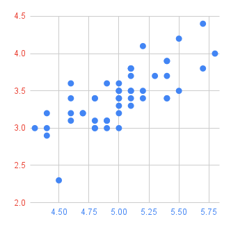

この演習問題で使用したIrisデータセットの出典は次のとおりです。
- R. A. Fisher, 1936, The use of multiple measurements in taxonomic problems, Annual Eugenics, 7, Part II, 179-188.
- Iris - UCI Machine Learning Repository
- https://archive.ics.uci.edu/dataset/53/iris
この演習問題で使用したIrisデータセットの出典は次のとおりです。
表１は50本のヒオウギアヤメの形状についてのデータである。次の各問いに答えよ。
| がく片の長さ(cm) | がく片の幅(cm) | 花弁の長さ(cm) | 花弁の幅(cm) |
|---|---|---|---|
| 5.1 | 3.5 | 1.4 | 0.2 |
| 4.9 | 3 | 1.4 | 0.2 |
| 4.7 | 3.2 | 1.3 | 0.2 |
| 4.6 | 3.1 | 1.5 | 0.2 |
| 5.3 | 3.7 | 1.5 | 0.2 |
| 5 | 3.3 | 1.4 | 0.2 |
| がく片の長さ(cm) | がく片の幅(cm) | 花弁の幅(cm) | |
|---|---|---|---|
| 最小値 | 4.3 | 2.3 | 0.1 |
| 第１四分位数 | 4.8 | 3.2 | 0.2 |
| 第２四分位数 | 5 | 3.4 | 0.2 |
| 第３四分位数 | 5.2 | 3.675 | 0.3 |
| 最大値 | 5.8 | 4.4 | 0.6 |
| 平均値 | 5.006 | 3.428 | 0.246 |
| 標準偏差 | 0.349 | 0.375 | 0.104 |
| がく片の長さ(cm) | がく片の幅(cm) | 花弁の長さ(cm) | 花弁の幅(cm) | |
|---|---|---|---|---|
| がく片の長さ(cm) | 1.000 | 0.743 | 0.267 | 0.278 |
| がく片の幅(cm) | 0.743 | 1.000 | 0.178 | 0.233 |
| 花弁の長さ(cm) | 0.267 | 0.178 | 1.000 | 0.332 |
| 花弁の幅(cm) | 0.278 | 0.233 | 0.332 | 1.000 |
複数のデータ間の散布図や相関係数を表形式で表したものを散布図行列といいます。下の表は、散布図行列の一例で、同じデータのセルにはヒストグラムを表示し、重複するセルの片方には相関係数を表示しています。
| がく片の長さ〔cm〕 | がく片の幅〔cm〕 | 花弁の長さ〔cm〕 | 花弁の幅〔cm〕 | |
|---|---|---|---|---|
| がく片の長さ〔cm〕 | 0.743 | 0.267 | 0.278 | |
| がく片の幅〔cm〕 |  | 0.178 | 0.233 | |
| 花弁の長さ〔cm〕 | 0.332 | |||
| 花弁の幅〔cm〕 |
表１は３種類のアヤメ（ヒオウギアヤメ，ブルーフラッグ，バージニカ）の形状についてのデータである。表１のピボットテーブルを作成し、アヤメの品種ごとの花弁の長さと花弁の幅の関係について調べよ。
ピボットテーブルは、大量のデータの集計や分析を行うためのツールです。
❶表１を選択したまま、メニューバー ＞ ❷挿入 ＞ ❸ピボットテーブルを選択します。
ピボットテーブルの作成で、挿入先を❹既存のシートを選択し、範囲を❺H9セルを指定します。
サイドパネルにピボットテーブル エディタが表示されるので、ピボットテーブルの設定をします。❼行の横の[追加]をクリックし、「花弁の長さ(cm)」を選択します。❽列の横の[追加]をクリックし、「種類」を選択します。❾値の横の[追加]をクリックし、「花弁の幅(cm)」を選択し、集計に「AVERAGE」を指定します。
❿表示されたピボットテーブルを選択し、グラフを作成します。
また、ピボットテーブルを編集するときは、ピボットテーブルの左下の★編集をクリックします。

このように、適切なデータを可視化することによって、アヤメの品種の分類をすることができます。